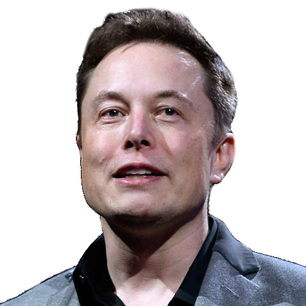

Elon Reeve Musk (* 28. jún 1971, Pretória, Južná Afrika) je inžinier, vynálezca, vizionár a úspešný podnikateľ. Je generálnym riaditeľom automobilky Tesla Motors a zároveň jej najväčším akcionárom. Vlastní firmu SpaceX, ktorá pôsobí v aerokozmickom priemysle. Stojí za vznikom spoločnosti PayPal. Je predsedom spoločnosti SolarCity, ktorú pomáhal založiť. Bol hlavným iniciátorom vzniku neziskovej organizácie OpenAI, ktorá sa zaoberá vývojom a kontrolou umelej inteligencie.  V roku 2013 predstavil koncept ultra-rýchleho dopravného systému Hyperloop, ktorý poskytol k ďalšiemu vývoju formou open source. Prostredníctvom spoločnosti SpaceX plánuje uskutočniť v roku 2022 misiu na Mars. Jeho hlavným cieľom je kolonizácia Marsu, ktorú považuje za záložný plán pre prežitie ľudskej rasy. Dlhodobo upozorňuje na nebezpečenstvo umelej inteligencie. Považuje ju za najväčšiu hrozbu pre ľudstvo. To bol hlavný dôvod, prečo inicioval založenie spomínanej organizácie OpenAI. S majetkom 11,5 miliardy dolárov ho magazín Forbes vyhlásil za 83. najbohatšieho človeka na svete.
Musk sa narodil v Južnej Afrike ako syn juhoafrického inžiniera a newyorskej modelky a odborníčky na výživu. Domov opustil v roku 1988 vo veku 17 rokov, bez rodičovskej podpory, a sčasti aj kvôli povinnej vojenskej službe v Juhoafrickej republike. („Kto by chcel slúžiť vo fašistickej armáde“ - citát Muska). Odišiel do Kingstonu (Kanada), kde navštevoval Kráľovskú univerzitu. Získal štipendium na Pennsylvánskej Univerzite, kde obdržal vysokoškolský titul z ekonómie na Wharton School. Neskôr ostal ešte rok, aby získal druhý titul z fyziky.
V roku 1995 Musk odišiel na vysokoškolský študijný program vo fyzike vysokých energií na Standfordovej univerzite, kde zotrval presne dva dni, aby hneď školu opustil a založil firmu Zip2, ktorá poskytovala software pre online publikácie pre mediálne organizácie. V roku 1999 divízia Compaqu AltaVista získala Zip2 za 307 miliónov USD v hotovosti a 34 miliónov v akciách. Elon a jeho brat Kimbal vlastnili toho času 12 percent Zip2.